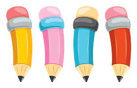

We let you write your own future.

Things youb dont know about Pencil
1.There is no risk of lead poisoning if you stab yourself (or someone else) with a pencil because it
contains no lead — just a mixture of clay and graphite. Still, pencil wounds carry a risk of infection for
the stabees, lawsuits for stabbers.
2.And bad juju for anyone linked to Watergate: In his autobiography, G. Gordon Liddy describes finding John Dean
(whom he despised for “disloyalty”) alone in a room. Spotting sharpened pencils on a desk, Liddy fleetingly considered
driving one into Dean’s throat.
3.Graphite, a crystallized form of carbon, was discovered near Keswick, England, in the mid-16th century. An 18th-century
German chemist, A. G. Werner, named it, sensibly enough, from the Greek graphein, “to write.”
4.The word “pencil” derives from the Latin penicillus, meaning — not so sensibly — “little tail.”
5.Pencil marks are made when tiny graphite flecks, often just thousandths of an inch wide, stick to the fibers that make up paper.
6.Got time to kill? The average pencil holds enough graphite to draw a line about 35 miles long or to write roughly 45,000 words.
History does not record anyone testing this statistic.
7.The Greek poet Philip of Thessaloníki wrote of leaden writing instruments in the first century B.C., but the modern pencil, as
described by Swiss naturalist Conrad Gesner, dates only to 1565.
8.French pencil boosters include Nicolas-Jacques Conté, who patented a clay-and-graphite manufacturing process in 1795; Bernard Lassimone,
who patented the first pencil sharpener in 1828; and Therry des Estwaux, who invented an improved mechanical sharpener in 1847.
9.French researchers also hit on the idea of using caoutchouc, a vegetable gum now known as rubber, to erase pencil marks. Until then,
writers removed mistakes with bread crumbs.
10.Most pencils sold in America today have eraser tips, while those sold in Europe usually have none. Are Europeans more confident scribblers?
11.Henry David Thoreau — American, but a confident scribbler all the same — used pencils to write Walden. And he probably got them free.
His father owned a pencil-making business near Boston, where Henry allegedly designed his own pencils before becoming a semi-recluse.
12.In 1861, Eberhard Faber built the first American mass-production pencil factory in New York City.
13.Pencils were among the basic equipment issued to Union soldiers during the Civil War.
14.The mechanical pencil was patented in 1822. The company founded by its British developers prospered until 1941, when the factory was bombed,
presumably by pencil-hating Nazis.
15.Je suis un crayon rouge. After the 1917 Soviet revolution, American entrepreneur Armand Hammer was awarded a monopoly for pencil manufacturing in the USSR.
16.More than half of all pencils come from China. In 2004, factories there turned out 10 billion pencils, enough to circle the earth more than 40 times.
17.Pencils can write in zero gravity and so were used on early American and Russian space missions — even though NASA engineers worried about the flammability
of wood pencils in a pure-oxygen atmosphere, not to mention the menace of floating bits of graphite.
18.Those concerns inspired Paul Fisher to develop the pressurized Fisher Space Pen in 1965. After the Apollo 1 fire, NASA banned pencils in favor of his pen on
manned spaceflights.
19.The world’s largest pencil is a Castell 9000, on display at the manufacturer’s plant near Kuala Lumpur. Made of Malaysian wood and polymer, it stands 65 feet high.
20.At the other extreme, engineers at the University of California at Santa Barbara have used an atomic force microscope as a kind of pencil to draw lines 50 nanometers
(two millionths of an inch) wide. Just because they could.